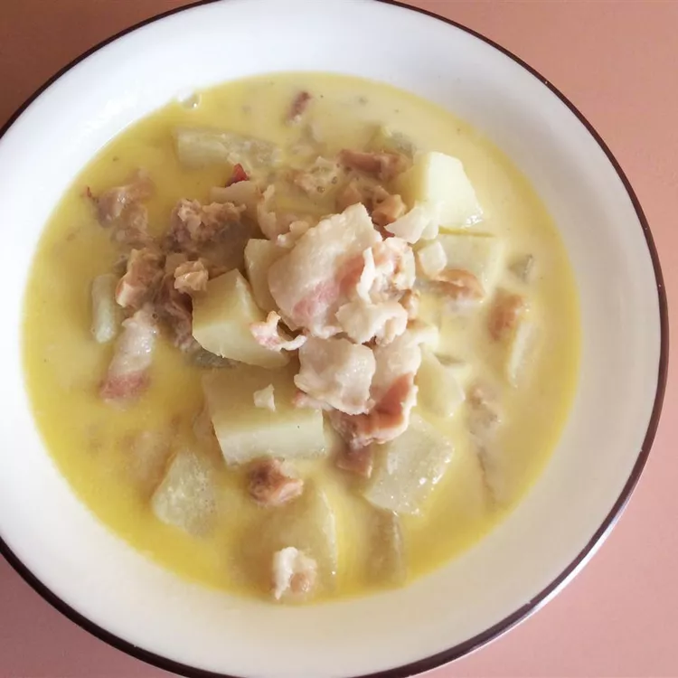

Clam Chowder

What Even is Clam Chowder
Clam Chowder is a chowder soup containing clams. It also can include a variety of other ingredients such as diced potatoes, salt pork, and onions.
ingredients
- 4 slices bacon, diced
- 11/2 cups chopped onion
- 4 cups peeled and cubed potatoes
- 11/2 cups water
- 11/2 teaspoons salt
- 1/2 teaspoon ground black pepper to taste
- 3 cups half and half
- 3 tablespoons butter
- 2 (10 ounce) cans minced clams
Steps
- Place diced bacon in a large stockpot over medium-high heat; cook and stir until almost crisp. Add onion; cook and stir until tender, about 5 minutes.
- Stir in potatoes and add water; season with salt and pepper and bring to a boil. Reduce heat to low and simmer, uncovered, until potatoes are tender, about 15 minutes.
- Pour in half-and-half and add butter. Drain clams, reserving clam liquid; stir clams and 1/2 of the clam liquid into the soup. Cook until heated through, without boiling, about 5 minutes.